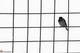

پذيرش > همراهان > نامه های شما > از سهروردی تا اوین و قزل حصار
 خودشان هم نمی دانند چرا ما را دستگیر کرده اند خودشان هم نمی دانند چرا ما را دستگیر کرده اند

 از سهروردی تا اوین و قزل حصار از سهروردی تا اوین و قزل حصار
11 فروردین 1388 - یادداشت مردان بازداشتی - نسخه قابل چاپ
تغییر برای برابری :
1- مأموران وزارت اطلاعات از ده ها دقیقه قبل از ساعت 2 سر خیابان سهروردی حاضر بودند.
2- ساعت 2:15 دقیقه بود و منتظر چند نفر از بقیه ی بچه ها بودیم. من دیدم چند نفر از آن طرف خیابان دارند از ما فیلم می گیرند. به بچه ها گفتم این جا ماندنِ ما به صلاح نیست.
3- چند دقیقه بعد که قصد کردیم راه بیفتیم مأمورین اطلاعات و نیروی انتظامی به ماشین ها یورش بردند.
4- از مأموری که ماشین من را نگه داشته بود کارتش را خواستم. روی آن نوشته شده بود مأمور اطلاعات منطقه ی 7.
5- یکی از مأمورین گفت بروید. مأمور دیگر اعتراض کرد که یعنی چی بروند؟ معلوم بود که خودشان هم درست نمی دانند به چه منظوری دارند این کارها را می کنند.
6- موبایل هایمان را در کلانتری گرفتند. قبل از آن بچه ها با وجود تأکید مأمورین به ممنوعیت استفاده از موبایل، می توانستند از موبایل خود استفاده کنند. باز هم معلوم بود که مأمورین با یکدیگر هماهنگ نبودند.
7- در کلانتری نیلوفر برخوردها خوب نبود. با الفاظ زشت ما را مخاطب قرار می دادند. خانم ها اعتراض می کردند. من و سه پسر دیگر اما نمی توانستیم خیلی بلند، مثل خانم ها، داد بزنیم چون مشت¬شان بود که می¬آمد توی صورتمان!
8- از همه¬مان بازجویی کردند. یک پسر را هم اشتباهی با ما گرفته بودند که بعد از یکی دوساعت آزاد شد.
9- مدام تکرار می کردند که ما می خواهیم رفع ظن کنیم. به زودی آزاد می شوید.
10- اتهامی که بازجو به من تفهیم کرد تجمع غیرقانونی بود. توی برگه خواستم بنویسم اتهامی که ایشان به من تفهیم کرده تجمع غیر قانونی است که زد زیر دستم و گفت این را ننویس. معلوم بود که می ترسد این جمله داخل آن برگه بیاید. من هم گوش نکردم و همان جمله را در برگه نوشتم.
11- محور سؤالات درمورد این بود که کجا می خواستیم برویم و چرا و چه کسی برنامه ریزی کرده است و فعالیت¬هایم در دانشگاه چیست و انجمن اسلامی کجاست و غیره. که خب ارتباطی با اتهام نداشت و من پاسخ ندادم.
12- از ما چهار پسر انگشت نگاری کردند. سپس با وجود اعتراض خانم ها، ما را به بازداشتگاه کلانتری انتقال دادند.
13- یک ساعت آن جا بودیم. سپس ما را بالا آوردند و به اتاق دیگری بردند که خانم ها هم آن جا بودند.
14- به چهار پسر دستبند زدند. خانم ها اجازه ی دستبند زدن ندادند. با بهارا و خانم مقدم و دلآرام برخورد فیزیکی داشتند.
15- چهار پسر را سوار یک پیکان کردند و بردند اوین. خانم ها را سوار هایس کردند.
16- دو ساعت در دادسرای کنار زندان معطل بودیم. دست بندهایمان را باز کردند. همه مان را توی یک اتاق نشاندند و قاضی دهقان برای همه ی افراد این اتهام سه خطی را نوشت که : اقدام علیه امنیت ملی و نظام مقدس جمهوری اسلامی از طریق تبلیغ گفتمان مغایر با مبانی نظام با ارتباط گرفتن با نیروهای غیر خودی!
17- سپس تک تک داخل اتاق دیگری شدیم و پای یک برگه ی سفید را امضا کردیم که آیا کفیل داریم یا نه. به جز ما چهار پسر، خانم ها کفیل نداشتند.
18- یک ساعت منتظر شدیم که قاضی متین راسخ بیاید. او تک تک ما را خواست و از هر کس چند تا سؤال کرد.
19- از من پرسید: چندمین باری است که این جا می آیی؟ گفتم اولین بار! گفت : فکر نمی کنم بار اولت باشد. مگر همان آقا پسر دانشجوی فلان دانشگاه نیستی؟ گفتم چرا هستم. گفت : بفرمایید بیرون!
20- این بار که از پیش متین راسخ آمدیم به دستور قاضی با فاصله کنار هم نشستیم که با یکدیگر صحبت نکنیم.
21- همه را به اوین انتقال دادند. یکی از بازجو ها که نقش هویج را بازی می کرد گفت می توانید از گوشی های خود استفاده کنید و زنگ بزنید. بازجوی چماق اعتراض کرد که نه! بازجوی هویج گفت با خود متین راسخ صحبت کرده است.
22- ما پسرها را به قرنطینه ی اوین بردند؛ بند معتادین.
23- بعد از چند دقیقه آمدند عذرخواهی کردند. انتقالمان دادند به یک اتاق با سی تخت خالی.
24- مجدداً آمدند عذر خواهی کردند و این بار رفتیم بند مشروب خورها و بدهکارها و کلاهبردارها.
25- از پنجشنبه شب تا شنبه صبح آن جا بودیم.
26- شنبه صبح تعداد زیادی از زندانی ها به زندان قزل حصار انتقال پیدا کردند. نام ما هم جزء آن ها بود.
27- از دستبند و پابند برای انتقال همه ی زندانی ها از جمله ما استفاده کردند. مشکل پا و کمر یکی از پسرها در همه ی این مراحل آزارش می داد.
28- قبل از وارد شدن به قرنطینه ی قزل حصار همه ی زندانی ها را لخت مادرزاد می کردند که یک وقت مواد مخدر همراه خود نداشته باشند. ما پسرها هم از این قضیه مستثنی نبودیم. آن جا تفکیک جرایم صورت نمی گرفت.
29- وضعیت قرنطینه ی قزل حصار به مراتب بهتر از اوین بود. هم دسترسی به تلفن داشتیم، هم حمام کردیم، هم یک تلویزیون در اختیارمان بود.
30- قرنطینه ی اوین پنج تا اتاق داشت، هر کدام با 40 تخت. هر اتاق مخصوص یک جرم خاص بود. قرنطینه ی قزل حصار یک اتاق بیشتر نبود با حدود 200 تخت. همه ی مجرمان یک جا نگهداری می شدند.
31- مسئول زندان قزل حصار، یا دست کم مسئول زندانی هایی که در قرنطینه نگهداری می شدند، که یک جناب سرهنگ بود، من را به اتاقش احضار کرد و پرسید که چرا آن جا هستیم. توضیح دادم. باور نمی کرد و می گفت محال ممکن است به خاطر مهمانی رفتن بازداشتتان کرده باشند!
32- معلوم بود که خودشان هم نمی دانند چرا ما را دستگیر کرده اند.
ارسال به
بالاترین
،
توییتر
،
فریندفید
،
فیسبوک
در همين بخش :
 پیشکش "ندا"های کشورم /خانم دکتر،چند دقيقه وقت داريد؟ / خليل طالقانی پیشکش "ندا"های کشورم /خانم دکتر،چند دقيقه وقت داريد؟ / خليل طالقانی
براي سه سال سخت كمپين، براي ما
برای دادخواهی از ظلمی که بر فرزندانمان می رود چه می توانیم بکنیم؟
زنان زابل در چنگ خرافات و خشونت
سه شنبه سبز من
ديگر بخش ها :
طرح یک میلیون امضا
|
مقالات
|
سایت نوشته ها
|
اخبار
|
گزارش كمپين
|
گفت و گو
|
علیه سکوت
|
كوچه به كوچه
|
نامه های شما
|
گزارش ویژه
|
گفتگو با اعضا
|
ویژه سالگرد کمپین
|
تصویر برابری
|
دل آرام علی
|
تریبون
|
مقالات
|
تاریخ شفاهی
|
خارج از چارچوب
|
کتابخانه
|
درباره کمپین
|
کمپین در شهرها
|
کمپین در بند
|
صدای تغییر
|
ویژه 22 خرداد
|
لایحه حمایت از خانواده
|
گالری
|
عشا مومنی
|
امیر یعقوبعلی
|
خدیجه مقدم
|
راحله عسگری زاده و نسیم خسروی
|
پروین اردلان،جلوه جواهری، مریم حسین خواه، ناهید کشاورز
|
زینب پیغمبرزاده
|
سعیده امین، سارا ایمانیان، محبوبه حسین زاده، ناهید کشاورز و همایون نامی
|
احترام شادفر
|
نسیم سرابندی زاده،فاطمه دهدشتی
|
وبلاگ مهمان
|
پرونده خرم آباد
|
دستگیری ها
|
مریم مالک
|
پرستو اللهیاری
|
مهرنوش اعتمادی
|
سمیه رشیدی
|
Other Languages
|
همراهان
|
«فراخوان کمپین ده روز با بهاره هدایت»
| English
|